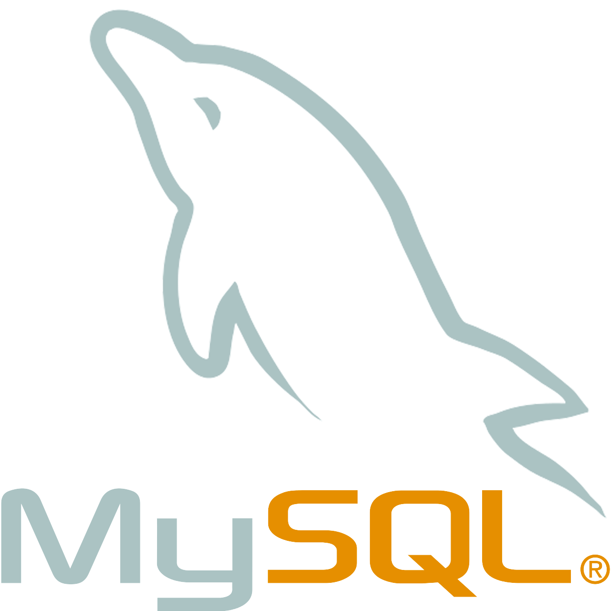
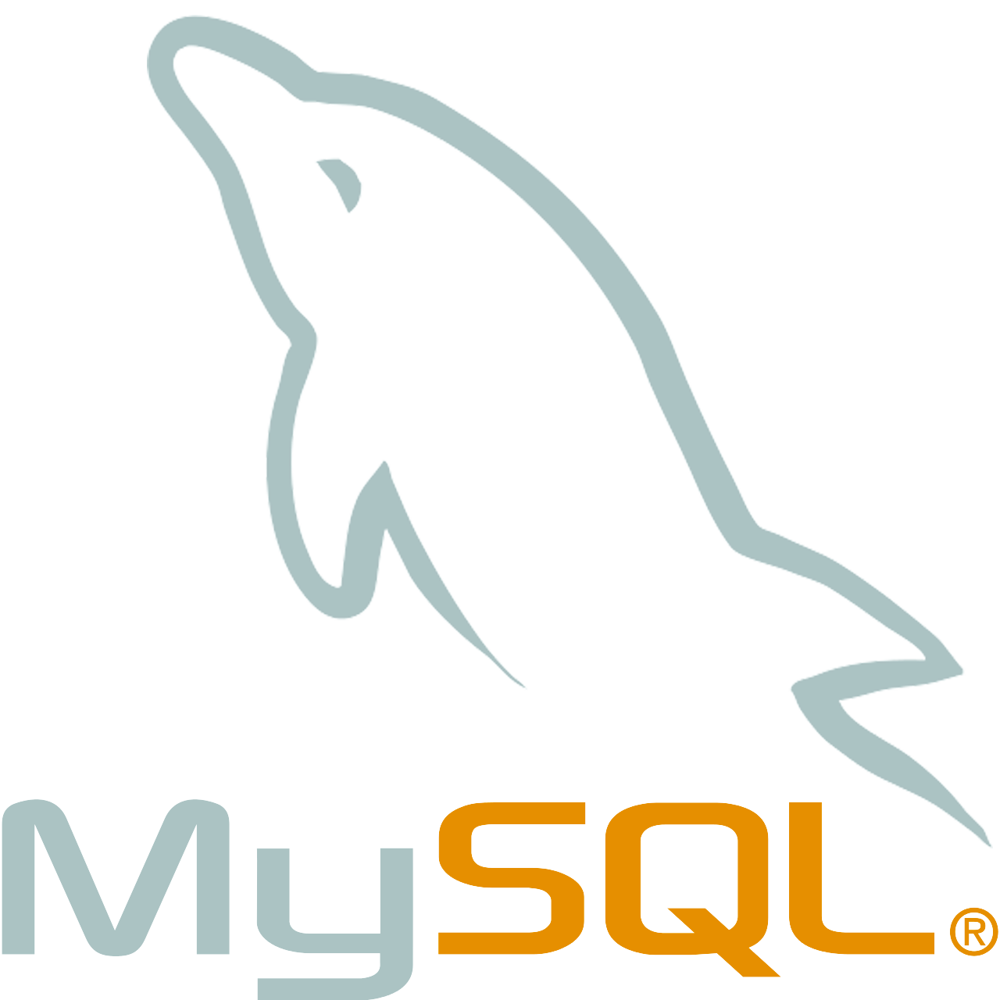

Horizons
Summer 2022
Tools:

 


As the centerpiece of our CMPT 354 group project at Simon Fraser University during the Summer
of 2022, we developed a language learning web application named "Horizons." This application
facilitates immersive language learning by connecting students and instructors, enabling
structured lessons, quizzes, and interaction with fluent speakers.
Our project used an Entity-Relationship (ER) model to design the database, which stores data
relating to students, instructors, languages, countries, study plans, groups, lessons, and
quizzes. By leveraging SQL Data Definition Language (DDL), we implemented the schema for
the database and created all the necessary tables.
Our application was built using a variation of the MERN stack (Mysql, Express.js,
React.js, and Node.js).
Our application features a Graphical User Interface (GUI) that allows users to run
queries easily. These queries include a range of QL operationsS, such as insert,
delete, update, selection, projection, join, and aggregation, among others. These
operations enable diverse functionality, from inserting data into tables and deleting
records to making complex multi-table selections.
Overall, the "Horizons" project encapsulates our team's comprehensive understanding
and application of relational database principles, in combination with advanced
full-stack development tools, to create a user-friendly language learning application.

{kind=link}
{kind=link}
{kind=link}
{kind=link}
{kind=link}
{kind=link}
{kind=link}
{kind=link}